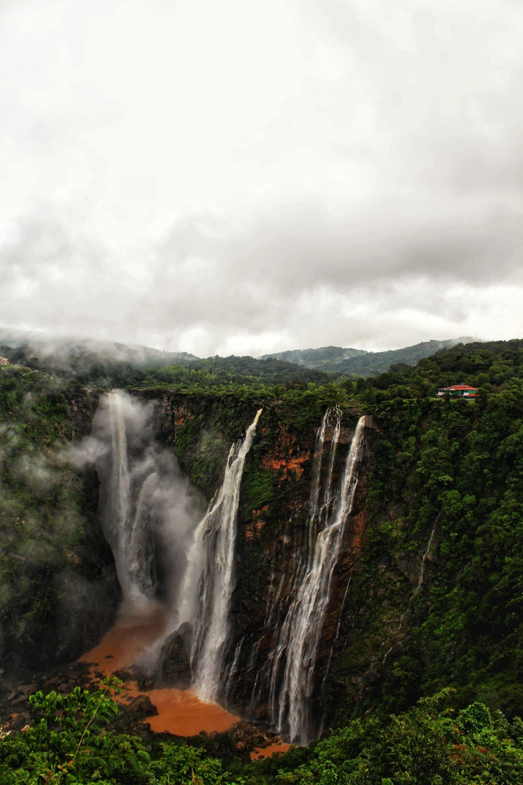
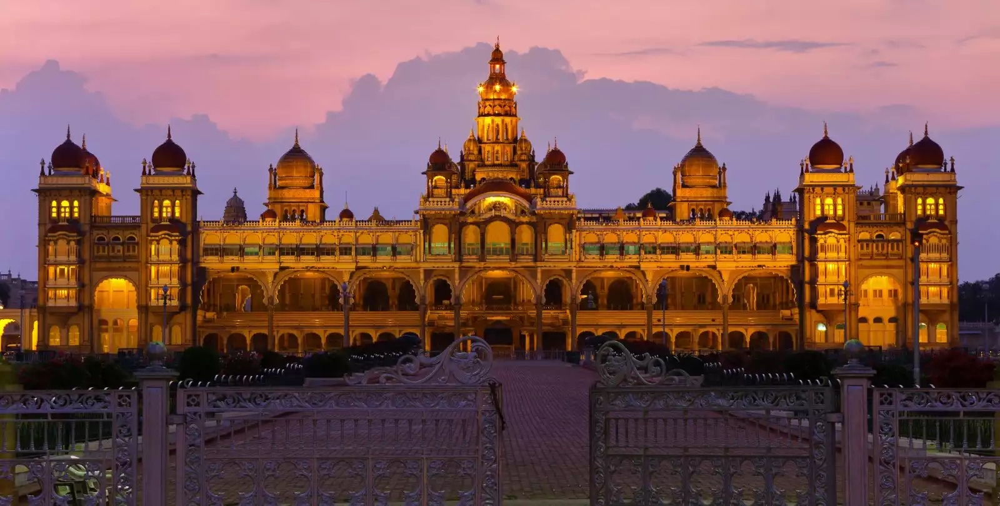
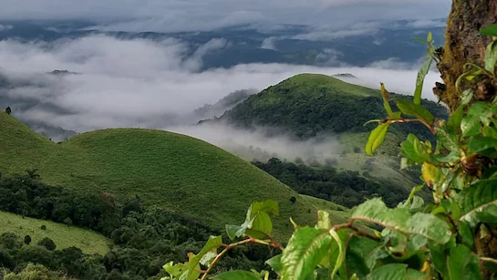
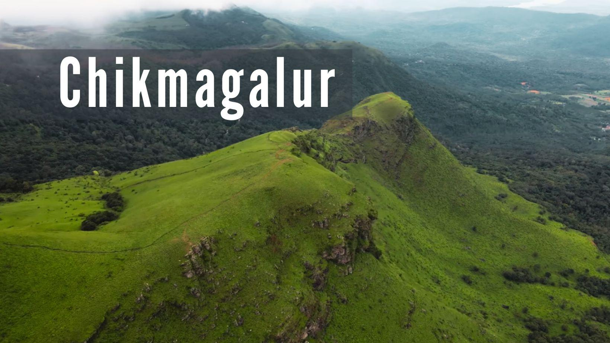
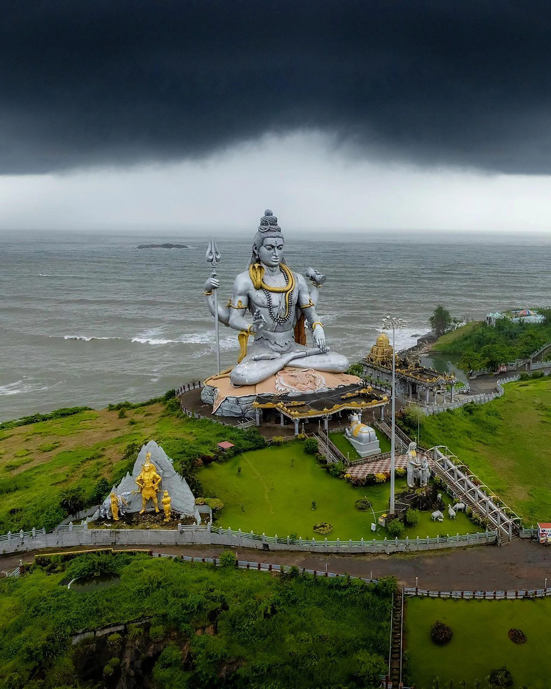
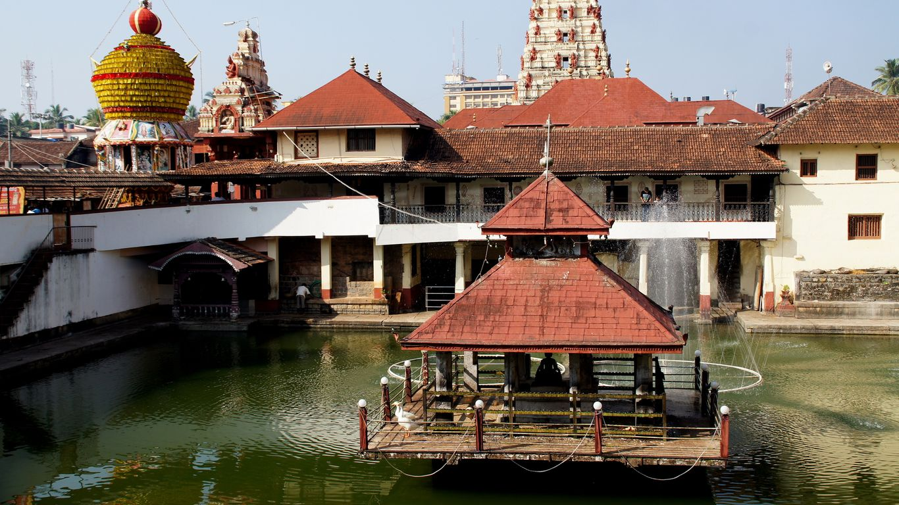
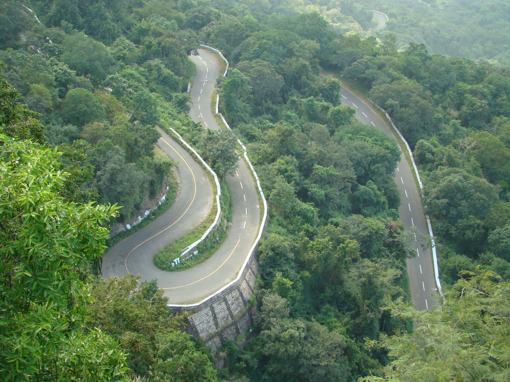
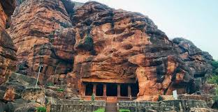
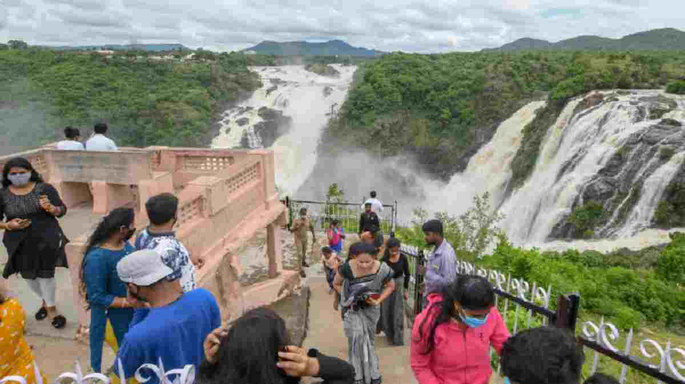

3. Hampi
Hampi is a UNESCO World Heritage Site known for its ancient temples.

Jog Falls is the highest waterfall in Karnataka located in Shivamogga.

Mysore Palace is one of the most famous historical palaces in India.
Hampi is a UNESCO World Heritage Site known for its ancient temples.

Coorg is a beautiful hill station famous for coffee plantations.

Chikmagalur is known for coffee estates and beautiful hills.

Gokarna is famous for temples and peaceful beaches.

Udupi is famous for Sri Krishna Temple and Udupi food.

Agumbe is known as the Cherrapunji of South India.

Badami is famous for rock cut cave temples.

Kabini is a popular wildlife safari destination.